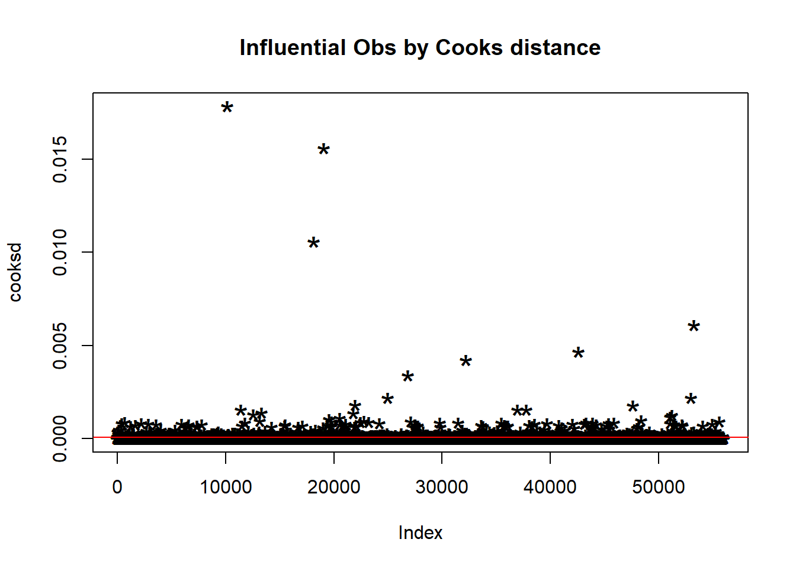

Tested Classification Models
#Load Libraries
library(chunked)## Loading required package: dplyr##
## Attaching package: 'dplyr'## The following objects are masked from 'package:stats':
##
## filter, lag## The following objects are masked from 'package:base':
##
## intersect, setdiff, setequal, unionlibrary(tidyverse)## ── Attaching packages
## ───────────────────────────────────────
## tidyverse 1.3.2 ──## ✔ ggplot2 3.4.0 ✔ purrr 0.3.5
## ✔ tibble 3.1.8 ✔ stringr 1.5.0
## ✔ tidyr 1.2.1 ✔ forcats 0.5.2
## ✔ readr 2.1.3
## ── Conflicts ────────────────────────────────────────── tidyverse_conflicts() ──
## ✖ dplyr::filter() masks stats::filter()
## ✖ dplyr::lag() masks stats::lag()library(caret)## Loading required package: lattice
##
## Attaching package: 'caret'
##
## The following object is masked from 'package:purrr':
##
## liftlibrary(FNN)
library(doBy)##
## Attaching package: 'doBy'
##
## The following object is masked from 'package:dplyr':
##
## order_bylibrary(data.table)##
## Attaching package: 'data.table'
##
## The following object is masked from 'package:purrr':
##
## transpose
##
## The following objects are masked from 'package:dplyr':
##
## between, first, lastlibrary(h2o)##
## ----------------------------------------------------------------------
##
## Your next step is to start H2O:
## > h2o.init()
##
## For H2O package documentation, ask for help:
## > ??h2o
##
## After starting H2O, you can use the Web UI at http://localhost:54321
## For more information visit https://docs.h2o.ai
##
## ----------------------------------------------------------------------
##
##
## Attaching package: 'h2o'
##
## The following objects are masked from 'package:data.table':
##
## hour, month, week, year
##
## The following objects are masked from 'package:stats':
##
## cor, sd, var
##
## The following objects are masked from 'package:base':
##
## %*%, %in%, &&, ||, apply, as.factor, as.numeric, colnames,
## colnames<-, ifelse, is.character, is.factor, is.numeric, log,
## log10, log1p, log2, round, signif, trunclibrary(gtsummary)
library(e1071)
library(mice)##
## Attaching package: 'mice'
##
## The following object is masked from 'package:stats':
##
## filter
##
## The following objects are masked from 'package:base':
##
## cbind, rbindlibrary(corrplot)## corrplot 0.92 loaded#for reproducibility
set.seed(4)#Data Preparation
diabetes_risk <- fread("data/diabetes_risk_data.csv") %>% rename(member_id = 1) %>% mutate(gender = recode(
gender,
"Male" = 0,
"Female" = 1), gluc = na_if(gluc, 0)) %>% mutate(diabetes = as.factor(diabetes), gender = as.factor(gender), cholesterol = as.factor(cholesterol), gluc = as.factor(gluc), smoke = as.factor(smoke), active = as.factor(active), alco = as.factor(alco), age = as.integer(age/365), height = height/2.54, weight = weight*2.20462)
knitr::kable(summary(diabetes_risk[,-1]))| age | gender | height | weight | ap_hi | ap_lo | cholesterol | gluc | smoke | alco | active | diabetes | bmi | |
|---|---|---|---|---|---|---|---|---|---|---|---|---|---|
| Min. :29.00 | 0:45530 | Min. :21.65 | Min. : 22.05 | Min. : -150.0 | Min. : -70.00 | 1 :47095 | 1 :59475 | 0:63831 | 0:66236 | 0:13739 | 0:35021 | Min. : 3.472 | |
| 1st Qu.:48.00 | 1:24470 | 1st Qu.:62.60 | 1st Qu.:143.30 | 1st Qu.: 120.0 | 1st Qu.: 80.00 | 2 : 8632 | 2 : 5190 | 1: 6169 | 1: 3764 | 1:56261 | 1:34979 | 1st Qu.: 23.875 | |
| Median :53.00 | NA | Median :64.96 | Median :158.73 | Median : 120.0 | Median : 80.00 | 3 : 7273 | 3 : 5330 | NA | NA | NA | NA | Median : 26.374 | |
| Mean :52.84 | NA | Mean :64.71 | Mean :163.60 | Mean : 128.8 | Mean : 96.63 | NA’s: 7000 | NA’s: 5 | NA | NA | NA | NA | Mean : 27.557 | |
| 3rd Qu.:58.00 | NA | 3rd Qu.:66.93 | 3rd Qu.:180.78 | 3rd Qu.: 140.0 | 3rd Qu.: 90.00 | NA | NA | NA | NA | NA | NA | 3rd Qu.: 30.222 | |
| Max. :64.00 | NA | Max. :98.43 | Max. :440.92 | Max. :16020.0 | Max. :11000.00 | NA | NA | NA | NA | NA | NA | Max. :298.667 |
# Define arbitrary matrix with TRUE values when data is missing and FALSE otherwise
A <- is.na(diabetes_risk)
# Replace all the other columns which are not the one you want to impute (let say column 2)
A[,-c(8:9)] <- FALSE
# Run the mice function
imputed <- mice(diabetes_risk, where = A)##
## iter imp variable
## 1 1 cholesterol gluc
## 1 2 cholesterol gluc
## 1 3 cholesterol gluc
## 1 4 cholesterol gluc
## 1 5 cholesterol gluc
## 2 1 cholesterol gluc
## 2 2 cholesterol gluc
## 2 3 cholesterol gluc
## 2 4 cholesterol gluc
## 2 5 cholesterol gluc
## 3 1 cholesterol gluc
## 3 2 cholesterol gluc
## 3 3 cholesterol gluc
## 3 4 cholesterol gluc
## 3 5 cholesterol gluc
## 4 1 cholesterol gluc
## 4 2 cholesterol gluc
## 4 3 cholesterol gluc
## 4 4 cholesterol gluc
## 4 5 cholesterol gluc
## 5 1 cholesterol gluc
## 5 2 cholesterol gluc
## 5 3 cholesterol gluc
## 5 4 cholesterol gluc
## 5 5 cholesterol gluc## Warning: Number of logged events: 1imputed <- complete(imputed)
knitr::kable(summary(imputed[,-1]))| age | gender | height | weight | ap_hi | ap_lo | cholesterol | gluc | smoke | alco | active | diabetes | bmi | |
|---|---|---|---|---|---|---|---|---|---|---|---|---|---|
| Min. :29.00 | 0:45530 | Min. :21.65 | Min. : 22.05 | Min. : -150.0 | Min. : -70.00 | 1:52353 | 1:59478 | 0:63831 | 0:66236 | 0:13739 | 0:35021 | Min. : 3.472 | |
| 1st Qu.:48.00 | 1:24470 | 1st Qu.:62.60 | 1st Qu.:143.30 | 1st Qu.: 120.0 | 1st Qu.: 80.00 | 2: 9607 | 2: 5191 | 1: 6169 | 1: 3764 | 1:56261 | 1:34979 | 1st Qu.: 23.875 | |
| Median :53.00 | NA | Median :64.96 | Median :158.73 | Median : 120.0 | Median : 80.00 | 3: 8040 | 3: 5331 | NA | NA | NA | NA | Median : 26.374 | |
| Mean :52.84 | NA | Mean :64.71 | Mean :163.60 | Mean : 128.8 | Mean : 96.63 | NA | NA | NA | NA | NA | NA | Mean : 27.557 | |
| 3rd Qu.:58.00 | NA | 3rd Qu.:66.93 | 3rd Qu.:180.78 | 3rd Qu.: 140.0 | 3rd Qu.: 90.00 | NA | NA | NA | NA | NA | NA | 3rd Qu.: 30.222 | |
| Max. :64.00 | NA | Max. :98.43 | Max. :440.92 | Max. :16020.0 | Max. :11000.00 | NA | NA | NA | NA | NA | NA | Max. :298.667 |
#Data Partition
indexTrain <- createDataPartition(y = imputed$diabetes, p = 0.8, list = FALSE)
trainData <- imputed[indexTrain, ]
testData <- imputed[-indexTrain, ]
#for model training (remove id variable)
trainData <- trainData[,-1]
testData <- testData[-1]
#checking for outliers
cooksd <- cooks.distance(glm(diabetes ~ .,
family = "binomial",
data = trainData))## Warning: glm.fit: fitted probabilities numerically 0 or 1 occurredplot(cooksd,
pch="*",
cex=2,
main="Influential Obs by Cooks distance")
abline(h = 4*mean(cooksd, na.rm=T), col="red")
outliers <- as.data.frame(rownames(trainData[cooksd > 4*mean(cooksd, na.rm=T), ]))
nrow(outliers)## [1] 37#Checking for multicolinearity (#bmi and weight are correlated)
corrplot(cor(trainData[,c(1,3:6,13)]), method = "circle", type = "full")
#for h2o package
localH2O <- h2o.init(nthreads = -1)## Connection successful!
##
## R is connected to the H2O cluster:
## H2O cluster uptime: 2 hours 43 minutes
## H2O cluster timezone: America/New_York
## H2O data parsing timezone: UTC
## H2O cluster version: 3.40.0.1
## H2O cluster version age: 17 days
## H2O cluster name: H2O_started_from_R_Riya_Bhilegaonkar_goj840
## H2O cluster total nodes: 1
## H2O cluster total memory: 1.88 GB
## H2O cluster total cores: 4
## H2O cluster allowed cores: 4
## H2O cluster healthy: TRUE
## H2O Connection ip: localhost
## H2O Connection port: 54321
## H2O Connection proxy: NA
## H2O Internal Security: FALSE
## R Version: R version 4.2.2 (2022-10-31 ucrt)#data as h2o cluster
train.h2o <- as.h2o(trainData)##
|
| | 0%
|
|======================================================================| 100%test.h2o <- as.h2o(testData)##
|
| | 0%
|
|======================================================================| 100%#dependent variable (Purchase)
y.dep <- 12
#independent variables
x.indep <- c(1:11,13)#Model Training with Random Forest
rforest.model <- h2o.randomForest(y=y.dep, x=x.indep, training_frame = train.h2o, ntrees = 1000, mtries = 3, max_depth = 4, seed = 4)##
|
| | 0%
|
|== | 3%
|
|====== | 9%
|
|================= | 24%
|
|============================= | 41%
|
|========================================= | 58%
|
|====================================================== | 77%
|
|==================================================================== | 97%
|
|======================================================================| 100%#Performance Metrics
h2o.performance(rforest.model, newdata = test.h2o)## H2OBinomialMetrics: drf
##
## MSE: 0.1953843
## RMSE: 0.442023
## LogLoss: 0.5784142
## Mean Per-Class Error: 0.297788
## AUC: 0.7845024
## AUCPR: 0.7623444
## Gini: 0.5690048
## R^2: 0.2184625
##
## Confusion Matrix (vertical: actual; across: predicted) for F1-optimal threshold:
## 0 1 Error Rate
## 0 3933 3071 0.438464 =3071/7004
## 1 1099 5896 0.157112 =1099/6995
## Totals 5032 8967 0.297878 =4170/13999
##
## Maximum Metrics: Maximum metrics at their respective thresholds
## metric threshold value idx
## 1 max f1 0.415623 0.738755 264
## 2 max f2 0.248995 0.838435 377
## 3 max f0point5 0.555928 0.734876 162
## 4 max accuracy 0.493850 0.724409 202
## 5 max precision 0.822022 1.000000 0
## 6 max recall 0.211415 1.000000 398
## 7 max specificity 0.822022 1.000000 0
## 8 max absolute_mcc 0.500569 0.449756 197
## 9 max min_per_class_accuracy 0.473807 0.720588 216
## 10 max mean_per_class_accuracy 0.493850 0.724388 202
## 11 max tns 0.822022 7004.000000 0
## 12 max fns 0.822022 6993.000000 0
## 13 max fps 0.209921 7004.000000 399
## 14 max tps 0.211415 6995.000000 398
## 15 max tnr 0.822022 1.000000 0
## 16 max fnr 0.822022 0.999714 0
## 17 max fpr 0.209921 1.000000 399
## 18 max tpr 0.211415 1.000000 398
##
## Gains/Lift Table: Extract with `h2o.gainsLift(<model>, <data>)` or `h2o.gainsLift(<model>, valid=<T/F>, xval=<T/F>)`#Model Training with Logistic Regression
logit.model <- h2o.glm( x = x.indep,
y = y.dep,
training_frame = train.h2o,
seed = 4,
family = "binomial",
lambda_search = TRUE,
alpha = 0.5,
nfolds = 5 )##
|
| | 0%
|
|======= | 10%
|
|==================== | 28%
|
|======================================================================| 100%## Warning in doTryCatch(return(expr), name, parentenv, handler): Reached maximum
## number of iterations 58!#Model Coefficients
h2o.coef(logit.model)## Intercept cholesterol.1 cholesterol.2 cholesterol.3 gluc.1
## -4.748745837 -0.415007284 0.000000000 0.238054342 0.000000000
## gluc.2 gluc.3 gender.0 gender.1 smoke.0
## 0.000000000 0.000000000 0.000000000 0.000000000 0.000000000
## smoke.1 alco.0 alco.1 active.0 active.1
## 0.000000000 0.000000000 0.000000000 0.000000000 0.000000000
## age height weight ap_hi ap_lo
## 0.058313252 0.000000000 0.007083654 0.002643915 0.000657690
## bmi
## 0.014376587#Performance Metrics
h2o.performance(logit.model, newdata = test.h2o)## H2OBinomialMetrics: glm
##
## MSE: 0.2179577
## RMSE: 0.4668594
## LogLoss: 0.6263266
## Mean Per-Class Error: 0.3929111
## AUC: 0.7112962
## AUCPR: 0.6944136
## Gini: 0.4225925
## R^2: 0.128169
## Residual Deviance: 17535.89
## AIC: 17551.89
##
## Confusion Matrix (vertical: actual; across: predicted) for F1-optimal threshold:
## 0 1 Error Rate
## 0 2200 4804 0.685894 =4804/7004
## 1 699 6296 0.099929 =699/6995
## Totals 2899 11100 0.393100 =5503/13999
##
## Maximum Metrics: Maximum metrics at their respective thresholds
## metric threshold value idx
## 1 max f1 0.371152 0.695883 301
## 2 max f2 0.259952 0.835526 367
## 3 max f0point5 0.505667 0.655380 205
## 4 max accuracy 0.500448 0.654332 209
## 5 max precision 0.926909 0.882353 6
## 6 max recall 0.164085 1.000000 398
## 7 max specificity 0.993293 0.999714 0
## 8 max absolute_mcc 0.505667 0.308967 205
## 9 max min_per_class_accuracy 0.495536 0.652323 213
## 10 max mean_per_class_accuracy 0.500448 0.654323 209
## 11 max tns 0.993293 7002.000000 0
## 12 max fns 0.993293 6994.000000 0
## 13 max fps 0.148663 7004.000000 399
## 14 max tps 0.164085 6995.000000 398
## 15 max tnr 0.993293 0.999714 0
## 16 max fnr 0.993293 0.999857 0
## 17 max fpr 0.148663 1.000000 399
## 18 max tpr 0.164085 1.000000 398
##
## Gains/Lift Table: Extract with `h2o.gainsLift(<model>, <data>)` or `h2o.gainsLift(<model>, valid=<T/F>, xval=<T/F>)`#Model Training with Naive Bayes
naive.h2o <- h2o.naiveBayes(x = x.indep,
y = y.dep,
training_frame = train.h2o,
laplace = 0,
nfolds = 5,
seed = 4)##
|
| | 0%
|
|==================================================================== | 97%
|
|======================================================================| 100%#Performance Metrics
h2o.performance(naive.h2o, newdata = test.h2o)## H2OBinomialMetrics: naivebayes
##
## MSE: 0.2725493
## RMSE: 0.5220626
## LogLoss: 0.8067433
## Mean Per-Class Error: 0.3804435
## AUC: 0.6952551
## AUCPR: 0.6729915
## Gini: 0.3905103
##
## Confusion Matrix (vertical: actual; across: predicted) for F1-optimal threshold:
## 0 1 Error Rate
## 0 2650 4354 0.621645 =4354/7004
## 1 974 6021 0.139242 =974/6995
## Totals 3624 10375 0.380599 =5328/13999
##
## Maximum Metrics: Maximum metrics at their respective thresholds
## metric threshold value idx
## 1 max f1 0.134947 0.693264 334
## 2 max f2 0.052042 0.834277 388
## 3 max f0point5 0.217059 0.642352 274
## 4 max accuracy 0.200870 0.643617 285
## 5 max precision 0.999899 0.837004 0
## 6 max recall 0.000000 1.000000 399
## 7 max specificity 0.999899 0.994717 0
## 8 max absolute_mcc 0.171665 0.289427 308
## 9 max min_per_class_accuracy 0.218421 0.642459 273
## 10 max mean_per_class_accuracy 0.200870 0.643647 285
## 11 max tns 0.999899 6967.000000 0
## 12 max fns 0.999899 6805.000000 0
## 13 max fps 0.000000 7004.000000 399
## 14 max tps 0.000000 6995.000000 399
## 15 max tnr 0.999899 0.994717 0
## 16 max fnr 0.999899 0.972838 0
## 17 max fpr 0.000000 1.000000 399
## 18 max tpr 0.000000 1.000000 399
##
## Gains/Lift Table: Extract with `h2o.gainsLift(<model>, <data>)` or `h2o.gainsLift(<model>, valid=<T/F>, xval=<T/F>)`tree.model = h2o.gbm(x = x.indep,
y = y.dep,
training_frame = train.h2o,
ntrees = 1, min_rows = 1,
sample_rate = 1,
col_sample_rate = 1,
max_depth = 5,
seed = 4)##
|
| | 0%
|
|======================================================================| 100%#Performance Metrics
h2o.performance(tree.model, newdata = test.h2o)## H2OBinomialMetrics: gbm
##
## MSE: 0.2380978
## RMSE: 0.4879526
## LogLoss: 0.669314
## Mean Per-Class Error: 0.2895188
## AUC: 0.7822821
## AUCPR: 0.7636901
## Gini: 0.5645642
## R^2: 0.04760856
##
## Confusion Matrix (vertical: actual; across: predicted) for F1-optimal threshold:
## 0 1 Error Rate
## 0 4178 2826 0.403484 =2826/7004
## 1 1228 5767 0.175554 =1228/6995
## Totals 5406 8593 0.289592 =4054/13999
##
## Maximum Metrics: Maximum metrics at their respective thresholds
## metric threshold value idx
## 1 max f1 0.489672 0.739928 25
## 2 max f2 0.472442 0.837641 29
## 3 max f0point5 0.503581 0.737518 22
## 4 max accuracy 0.503581 0.729624 22
## 5 max precision 0.536315 0.873437 2
## 6 max recall 0.462130 1.000000 30
## 7 max specificity 0.536994 0.997287 0
## 8 max absolute_mcc 0.503581 0.461070 22
## 9 max min_per_class_accuracy 0.500121 0.725804 23
## 10 max mean_per_class_accuracy 0.503581 0.729595 22
## 11 max tns 0.536994 6985.000000 0
## 12 max fns 0.536994 6896.000000 0
## 13 max fps 0.462130 7004.000000 30
## 14 max tps 0.462130 6995.000000 30
## 15 max tnr 0.536994 0.997287 0
## 16 max fnr 0.536994 0.985847 0
## 17 max fpr 0.462130 1.000000 30
## 18 max tpr 0.462130 1.000000 30
##
## Gains/Lift Table: Extract with `h2o.gainsLift(<model>, <data>)` or `h2o.gainsLift(<model>, valid=<T/F>, xval=<T/F>)`